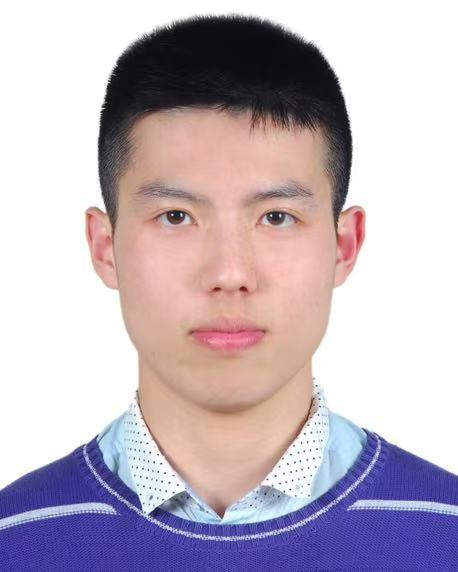

ACM ECCAI 2025
December 1-4, 2025
HKUST, Hong Kong
Call for Papers
In recent years, with the rapid development of AI, AI workloads are increasingly being generated and executed at the edge.
However, due to the limited computational capabilities of edge devices, edge-cloud collaboration has gained growing attention from researchers.
At the same time, new research directions have emerged around edge-cloud networking tailored for AI workloads and dynamically adjusting network bandwidth to support such collaboration.
Emerging AI technologies, such as edge-optimized deep learning and LLM-based network agents, further open up new possibilities for enhancing this paradigm.
ECCAI 2025 invites original research that explores these questions, aiming to bridge researchers and practitioners working at the intersection of AI,
mobile systems, edge computing, edge-cloud networking, and edge-cloud collaboration. We seek high-quality submissions describing novel ideas, system designs,
experimental studies, and real-world deployments in topics including, but not limited to:
1. Supporting the Deployment and Execution of AI Applications in Edge-Cloud Collaboration
- a. Processing video stream data within edge-cloud collaborative systems
- b. Optimizing support for real-time data processing at the edge, especially when data is generated at the edge and complex AI operations are performed in the cloud
- c. Integrating and optimizing AI data with various special patterns across edge and cloud environments
- d. Processing, acceleration, and accuracy enhancement of image, speech, and text data across edge and cloud
2. Leveraging AI technologies to enhance edge-cloud collaboration
- a. Predicting workloads to determine whether tasks should be executed at the edge or in the cloud
- b. Using reinforcement learning to adjust network bandwidth usage and compute resource allocation
- c. Automatically compressing models to fit the constraints of edge devices
- d. Employing large language models (LLMs) or agent systems to optimize edge-cloud collaboration
3. Applications and specific challenges of AI in edge-cloud collaboration
- a. Privacy protection issues in edge-cloud collaboration
- b. Applications of federated learning and knowledge distillation across edge and cloud environments
- c. The use of multimodal learning in edge-cloud collaborative systems
4. Deployment Experiences and Case Studies
- a. Large-scale deployments of AI workload on the edge devices and cloud
- b. Cloud-edge-device collaboration for real-time, AI-enhanced services
- c. Lessons learned from commercial or public deployments
- d. Prototype systems demonstrating access-network-based inference
- e. Edge-cloud collaboration for AI workloads in autonomous driving, smart manufacturing, and healthcare
Submission Instructions
Submissions must be original, unpublished work, and not under consideration at another conference or journal. Submitted papers must be at most six (6) pages long,
excluding references and appendices, in two-column 10pt ACM format . Authors of accepted submissions are expected to present and discuss their work at the workshop.
All submissions will be peer-reviewed, and the review process will be double-blind. Per the anonymity guidelines, please prepare your paper in a way that preserves
the anonymity of the authors. No information will be shared with third parties.
Please submit your paper via https://eccai2025.hotcrp.com/
Important Date
- Abstract Registration Deadline: July 24, 2025 (11:59 PM AoE)
- Workshop Paper Submission Deadline: July 28, 2025 (11:59 PM AoE)
- Notification of Acceptance: September 12, 2025
- Camera-Ready Version Due: October 8, 2025
- Workshop Program Available Online: October 15, 2025
- List of Organizers Published: October 15, 2025
Organizers
Steering Chair
- Dan R. K. Ports (Microsoft Research)
- Guoliang Xing (The Chinese University of Hong Kong)
- Jin Zhang (Southern University of Science and Technology)
- Kaishun Wu (The Hong Kong University of Science and Technology (Guangzhou))
Program Co-chairs
- Jialin Li (National University of Singapore)
- Song Yang (Beijing Institute of Technology)
Web Chair
- Biao Hou (Beijing Institute of Technology)
Publication Chair
- Linshan Jiang (National University of Singapore)
Publicity Chair

- Xiang Liu (National University of Singapore)
Program Committee Members
- Biao Hou (Beijing Institute of Technology)
- Dehui Wei (National University of Singapore)
- Jine Tang (Hebei University of Technology)
- Jiawei Shao (China Telecom)
- Kefei Liu (Bytedance Inc.)
- Lingkun Li (Beijing Jiaotong University)
- Mu Yuan (The Chinese University of Hong Kong)
- Shuxin Zhong (The Hong Kong University of Science and Technology (Guangzhou))
- Sijie Ji (California Institute of Technology)
- Weihai Shen (StonyBrook University)
- Weizheng Wang (City University of Hong Kong)
- Wentao Xie (The Hong Kong University of Science and Technology)
- Xiang Liu (National University of Singapore)
- Xin Du (Zhejiang University)
- Yijun Song (Zhejiang University of Finance & Economics)
- Yiming Qiu (The University of Hong Kong)
- Youqi Li (Beijing Institute of Technology)
- Yunming Xiao (Chinese University of Hong Kong, Shenzhen)
- Zheng Song (University of Michigan-Dearborn)
- Ziming Zhao (Zhejiang University)